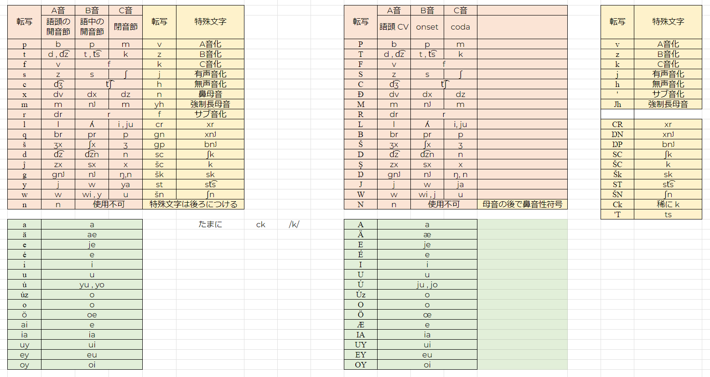
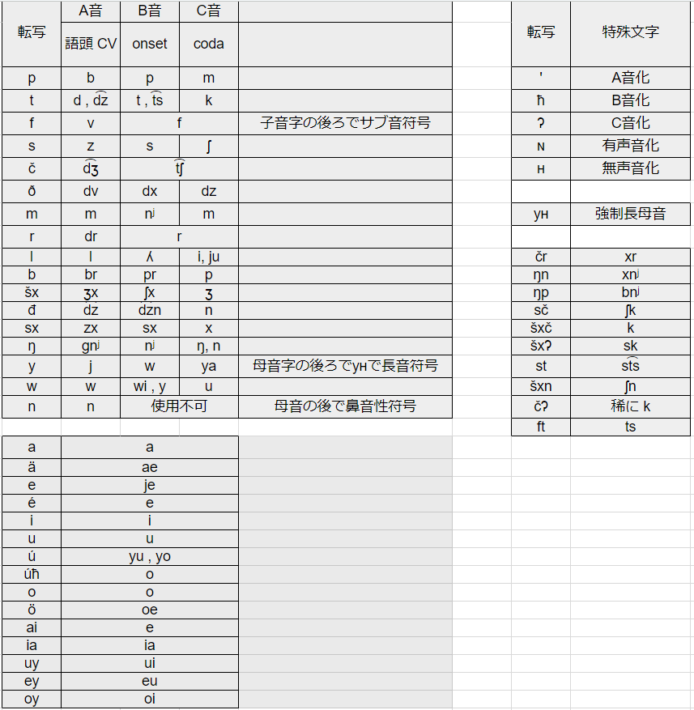
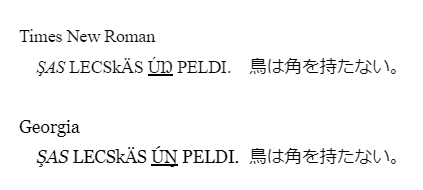
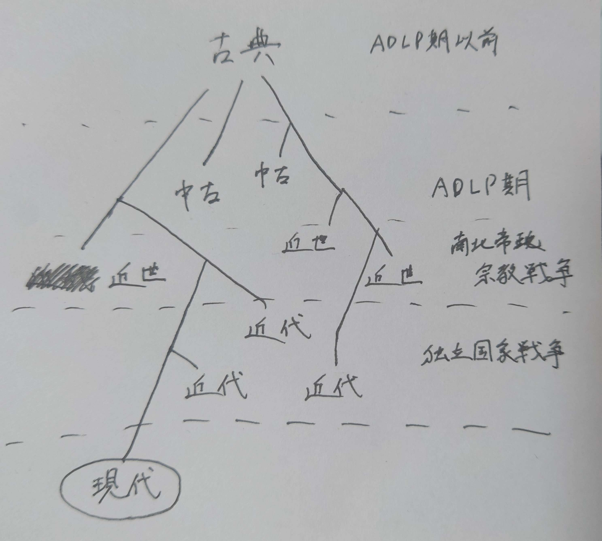

2024年に入りリナエスト語への関心が高まったことにより、各種資料が再び収集・分析されて考察が深められるようになった。
これらの進捗を書き記すため、新規にリポジトリを立ててログを残す。また、子音の音価はB音を代表として記すこととする。
長らくASCII文字を基本とした正書法(以下、旧正書法)がえかとんにより使用されていたが、これは慣れるまでのコストがあまりにも高いということで、WinComposeを活用した文字を活用しての正書法改革が行われた。
左が旧正書法、右が2月式正書法である。
2024年1月の第4週からmelovilijuがリナエストの固有名詞を考え始める必要を実感し始めたことによってリナエスト語との格闘が始まり、悠里勢がみんなでリナエスト語まわりのことを考えるようになった時期に定められたもの。
旧正書法でc /tʃ/, x /dx/, q /pr/, š /ʃx/, d /dzn/, ĵ /sx/, g /nʲ/で転写されていた子音がそれぞれč, ð, b, šx, đ, sx, ŋに、また母音字のŏ /oe/がöに変更された。特殊文字はすべて変更され、v, z, k, j, hがそれぞれ', ħ, ʔ, ɴ, ʜとなった。
フォントを作るにあたって大文字小文字の区別がないことが明らかになったことを受け、改めて利便性に基づいて正書法が考察された結果定められたもの。
母音字子音字を大文字に、特殊文字を小文字にあてることによって旧正書法の伝統を引き継ぎつつ可読性を上げることに成功した。
また本来一字だったものが二字で翻字されるのは明らかに不都合なので、šx, sxをš, şに改めた。さらに他との区別を必要としないčをcに戻した。
さらに、過去のリナエスト文字の画像を調べたところ、
が判明した。これらを踏まえ、サブ音化を'、aiをÆ、子音のyをJとして転写することとして解決。
これにより、2月式の転写は以下のようになる。
| 子音転写 | A音 | B音 | C音 | 母音転写 | 音価 |
|---|---|---|---|---|---|
| P | /b/ | /p/ | /m/ | A | /a/ |
| T | /d/, /dz/ | /t/, /ts/ | /k/ | Ä | /æ/ |
| F | /v/ | /f/ | E | /je/ | |
| S | /z/ | /s/ | /ʃ/ | É | /e/ |
| C | /dʒ/ | /tʃ/ | U | /u/ | |
| Ð | /dv/ | /dx/ | /dz/ | Ú | /ju/, /jo/ |
| M | /m/ | /nʲ/ | /m/ | Úz | /o/ |
| R | /dr/ | /r/ | O | /o/ | |
| L | /l/ | /ʎ/ | /i/, /ju/ | Ö | /ø~œ/ |
| B | /br/ | /pr/ | /p/ | Æ | /e/ |
| Š | /ʒx/ | /ʃx/ | /ʒ/ | IA | /ia/ |
| D | /dz/ | /dzn/ | /n/ | UY | /ui/ |
| Ş | /zx/ | /sx/ | /x/ | EY | /eu/ |
| Ŋ | /gnʲ/ | /nʲ/ | /ŋ/ | OY | /oi/ |
| J | /j/ | /w/ | /ja/ | ||
| W | /w/ | /j/, /wi/ | /u/ | ||
| N | /n/ | 直前の母音を鼻母音化 | |||
| 特殊文字転写 | 音価 |
|---|---|
| v | A音化 |
| z | B音化 |
| k | C音化 |
| ' | サブ音化 |
| j | 無声音化 |
| h | 有声音化 |
| Jh | 長音化 |
ちなみにŊは字形がフォントによって大文字Nにフックが付いた形(Ŋ)と、ŋを大文字化した形(Ŋ)にわかれる。VerdanaやMontserrat、Georgiaは前者、ArialやHelvetica、Times New Romanは後者であるが、下線を付した場合などにNとの区別がつきやすいため文法書などでは後者を採用している。
なお、google docsなどでは下線を付けた場合に下側につくダイアクリティカルマークが(Şなども含め)すべて見分けがつきづらくなるため、google docsでの強調は斜体か太字を使うべきである。
そもそもメタの事情を考えると、古典・中期・近世・近代・現代のリナエスト語はえかとんが興味の移り変わりや心境の変化で作り始めた「似て非なるもの」でしかなく、これらに直接的な子孫関係を見出しても得るところは少ない。
したがって、これらは悠里世界における祖先を同じくする言語群の記述として反映するのが妥当である。
つまり、「中期リナエスト語」や「現代リナエスト語」といった言語はあくまで「同じ時代のリナエスト語全体」である。これは現世で「英語」といったときにアメリカ英語やイギリス英語やオーストラリア英語が区別されずにまとめて指されることと似る。
それぞれの時代の「リナエスト語」は上図のような側系統群であり、また古典期にも単一の言語であったわけではなく、地域によって細かい差異があったと思われる。
辞書と発音記号を突き合せた結果、以下の規則を仮定すると204語のうち7語の例外を除きアクセント位置が説明できることが判明。
現代語文法として公開されている中には動詞活用は含まれていなかったため、活用表を近代の文法書から持ってきて現代仕様に削る作業を行った。
まずI型とY型の語尾がよく似ていたことから狭母音型として単一パターンにまとめ、次に近代と現代で特殊文字のかけ方が変わったことによりF型が存在しなくなったのでF型とA型を統合して広母音型としてまとめた。